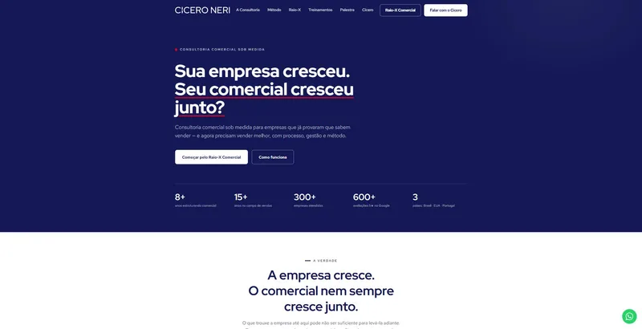
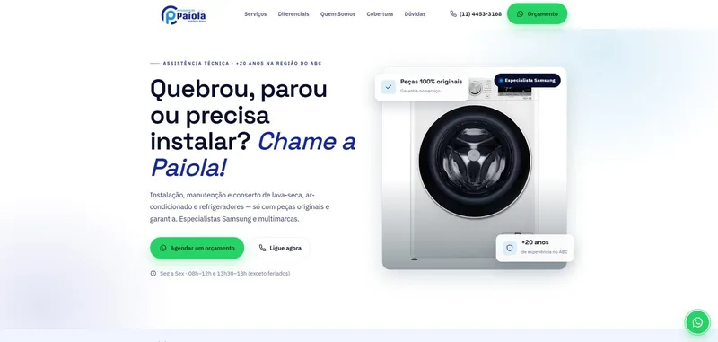
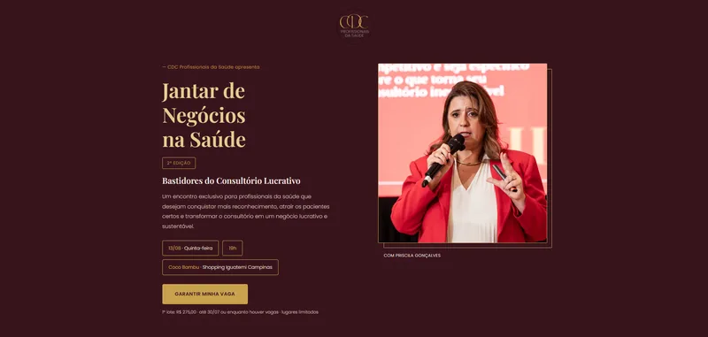
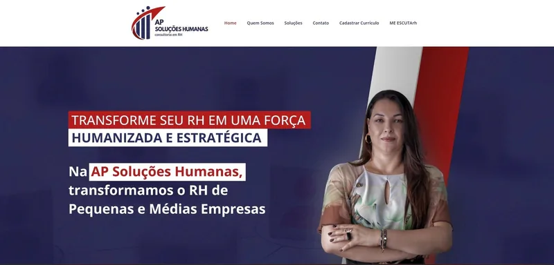
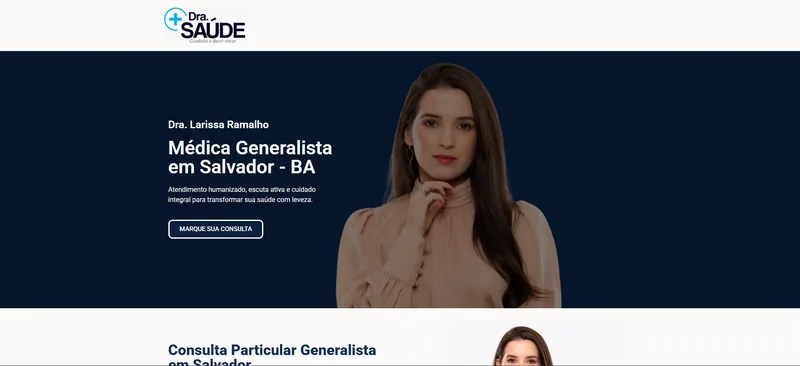
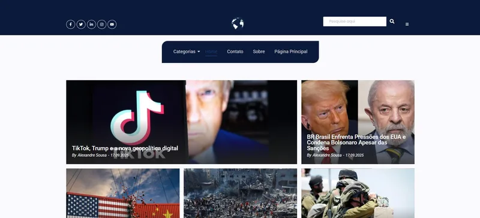

// desenvolvedor full-stack · dublin, irlanda
Matheus Dias de Souza
Construo aplicações web, sites e automações com IA, do banco de dados ao deploy.
Disponível · Dublin
Remoto ou presencial

Stack do dia a dia
Projeto em destaque · ID22 Marketing & Tecnologia
Sistema ID22
A agência controlava clientes, domínios e contratos em uma planilha. Transformei isso em uma plataforma interna que verifica se cada site está no ar, avisa antes de um domínio vencer e manda o alerta direto no WhatsApp.
Depois vieram login próprio, página de equipe e controle de ponto. Hoje o sistema está virando o ERP da agência, com um módulo de cadastro de clientes que alimenta os outros.
- sites monitorados
- 28
- verificações: uptime e domínio
- 2
- módulos no ar: login, equipe, ponto
- 3
Código privado da agência · demonstração sob pedido
- antesPlanilha Googleclientes, domínios e contratos à mão
- n8nUptimeRobot + RDAPsite no ar? domínio vence quando?
- supabase + next.jssistema.id22.com.brpainel com login, equipe e ponto
- evolution apiAlerta no WhatsAppo time sabe antes do cliente
// sites e landing pages
Do design ao deploy





// automações e ia
Agentes que atendem 24 horas
Agente de atendimento no WhatsApp
Responde perguntas frequentes sobre os membros do BNI. Os fluxos rodam no n8n, a conversa passa pela Evolution API e os dados ficam no Supabase.
Menos alucinação, mais precisão
A segunda versão lê os dados direto do Google Docs e usa um prompt refinado para errar menos. A orquestração continua no n8n.
// sobre mim
Do Direito ao deploy
- Formação
- Análise e Desenvolvimento de Sistemas · Direito
- Base
- Dublin, Irlanda
- Fora do código
- Maratonas
Sou o Matheus, desenvolvedor full-stack. Construo aplicações web, sites e automações com IA, do banco de dados ao deploy.
Meu maior projeto até agora é o Sistema ID22. Transformei a planilha que uma agência digital usava para controlar clientes e domínios em uma plataforma em Next.js e Supabase que monitora 28 sites e envia alertas pelo WhatsApp. Na mesma agência, entreguei 25 sites, landing pages e e-commerces, além de agentes de IA que atendem leads 24 horas por dia.
Cheguei à tecnologia por um caminho pouco comum. Sou formado em Direito, e uma temporada em Londres me fez perceber que eu queria construir coisas, e não só dar parecer sobre elas. De volta ao Brasil, comecei pelo e-commerce da família, criando landing pages, automações e campanhas com resultados que eu conseguia medir.
Hoje moro em Dublin e estou aberto a vagas full-stack e de automação, remotas ou presenciais. Gosto de código limpo, interfaces simples e soluções diretas. Fora do trabalho, corro maratonas.